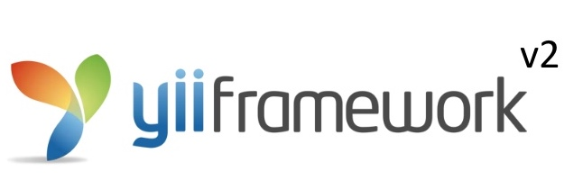

数据api接口的要点
因为最近面试反馈被问到了接口，所以在此总结接口涉及到的内容。
在工作中、接口涉及到编写app接口、因为编写app接口涉及到Java(安卓app)、Object C(IOSapp)与php后端的数据交换、所以编写app接口的核心数据交换格式是JSON。
编写app接口还有一点难点是保持已登录的用户的状态、因为app程序和浏览器不同的一点是、app默认是不支持cookie、所以默认app无法保持登录状态、所以常见的有以下三种解决方式
app在发送请求时、每次请求都模仿浏览器携带cookie，在cookie中包含session_id
app端登录成功后、php服务器端为登录的用户生成一个唯一的随机字符串、并返回给app、app在后面的请求里都携带上这个随机字符串、服务器通过这个随机字符串寻找对应的用户。
其它的基于唯一字符串的验证方式：比如JWT https://jwt.io/
除了app接口、还有不需要用户和用户状态保持的接口、比如支付宝的支付、没有状态的保持、只需要保证和接口通信的安全性。支付宝采用的是非对称加密和使用https协议进行数据传输、避免中间人攻击。
app接口设计要点
app接口设计包含以下4点
接口的作用
接口的地址
接口的参数、参数通常是post请求携带payload方式传递的json字符串、需要通过file_get_contents('php://input')进行接收、当然也可以模拟普通的html表单进行提交、在php中使用$_POST接收。
接口的返回值、通常会返回一个状态码表示接口是否成功执行
{
code：0,
message: "success",
data: { key1: value1, key2: value2, ... }
}
其中的code表示状态码、状态码举例、其中为0的状态码表示成功、其它均表示错误：
0：成功
100：请求错误
101：缺少appKey
102：缺少签名
103：缺少参数
200：服务器出错
201：服务不可用
202：服务器正在重启
其中的message表示消息、成功、表示成功的消息、失败、返回失败的消息、这个消息一般用于直接显示给用户。
还有的接口简化了状态码的设计、只返回成功或者失败的状态、所以、状态由true和false表示，true表示接口执行成功、false表示错误。
还有的直接使用http状态码作为接口的状态码返回给客户端。
接口的安全性
我们的接口暴露在互联网上、所以存在有人恶意使用程序进行调用、程序可以以极快的速度请求我们的接口、造成我们的接口无法服务其它正常用户、所以针对这个问题、可以对一个ip的调用次数在单位时间内进行限制、比如一个每分钟只允许60次请求、超过60次即认为非法请求、后面的请求拒绝提供服务。接口请求的次数可以保存在redis、memcache等高速缓存中、从而不影响接口的性能。
同时为了禁止非授权用户调用我们的接口、可以要求需要调用接口的第三方在我们的平台上进行注册、注册成功后、我们分配给一个固定的唯一的随机字符串、要求用户请求时必须携带此参数、并在我们的接口里进行校验、不匹配直接不提供服务。比如有道接口，百度地图接口
Restful接口
restful接口的要点就是利用请求动词（get,post）表示出接口调用方的意图（获取、删除、还是保存数据）
GET（SELECT）：从服务器取出资源（一项或多项）。
POST（CREATE）：在服务器新建一个资源。(客户端提供资源的信息)
PUT（UPDATE）：在服务器更新资源（客户端提供改变后的完整资源）。
PATCH（UPDATE）：在服务器更新资源（客户端提供改变的属性）。
DELETE（DELETE）：从服务器删除资源。
HEAD：获取资源的元数据。
OPTIONS：获取信息，关于资源的哪些属性是客户端可以改变的。
其中最常用的是前面5个请求动词、分别对应增删改查。其余用法和普通api没有区别。
接口调试工具
chrome扩展postman：https://chrome.google.com/webstore/detail/postman/fhbjgbiflinjbdggehcddcbncdddomop?hl=zh-CN
抓包工具fiddler：http://www.telerik.com/fiddler
php请求第三方接口
可以使用file_get_contents()默认以get方式请求、但是在实际开发中、为了增强对请求过程的控制、一般使用curl进行发起请求。
使用curl发起post请求
function curl_post(\(data, \)url, \(headers = array())
{
\)ch = curl_init();
\(res= curl_setopt (\)ch, CURLOPT_URL, \(url);
curl_setopt(\)ch, CURLOPT_SSL_VERIFYHOST, FALSE);
curl_setopt(\(ch, CURLOPT_SSL_VERIFYPEER, FALSE);
curl_setopt(\)ch, CURLOPT_HEADER, 0);
curl_setopt(\(ch, CURLOPT_POST, 1);
curl_setopt(\)ch, CURLOPT_POSTFIELDS, \(data);
curl_setopt(\)ch, CURLOPT_RETURNTRANSFER, 1);
\(result = curl_exec(\)ch);
curl_close(\(ch);
if (\)result == NULL) {
return 0;
}
return $result;
}
使用curl发起get请求
function curl_get(\(data, \)url, \(headers = array())
{
\)ch = curl_init();
\(res= curl_setopt (\)ch, CURLOPT_URL, \(url);
curl_setopt(\)ch, CURLOPT_SSL_VERIFYHOST, FALSE);
curl_setopt(\(ch, CURLOPT_SSL_VERIFYPEER, FALSE);
curl_setopt(\)ch, CURLOPT_HEADER, 0);
curl_setopt(\(ch, CURLOPT_POSTFIELDS, \)data);
curl_setopt(\(ch, CURLOPT_RETURNTRANSFER, 1);
\)result = curl_exec(\(ch);
curl_close(\)ch);
if (\(result == NULL) {
return 0;
}
return \)result;
}
第三方接口一般返回json字符串、我们对json字符串使用json_decode进行处理成php的对象或数组、就可以使用php操作变量的方式对返回的字符串进行处理。
友盟数据接口的使用方式
授权接口
\(url = 'http://api.umeng.com/authorize' ;
\)data = 'email=你的邮箱&password=你的密码';
echo curl_post(\(data, \)url);
获取app基本数据的接口
\(url = "http://api.umeng.com/apps/base_data";
\)data = '';
\(headers = array(
'Authorization: Basic 你的auth_token'
);
echo curl_get(\)data, \(url, \)headers);
参考资料
安装composer的三种方式
方式一：使用Composer-Setup.exe安装
下载Composer-Setup.exe 、然后运行、composer就已经安装在电脑上了。
注意：此方式需联网、但是composer文件在国外、所以国内可能下载失败导致composer安装失败。
有以下几种解决方案：
- 多次重试
- 换个地方的网络重试
- 使用境外代理
方式二：使用cmder+composer.phar无需联网安装composer
- 在composer官网上下载composer.phar文件。
- 下载cmder，代替windows的cmd的命令行工具、使用它的别名功能。
- 解压cmder.7z放到路径中没有中文的目录、
确定php.exe位置(绝对路径)
D:\phpStudy\php\php-7.1.0-nts\php.exe确定composer.phar位置（绝对路径）
D:\cmder\composer.phar配置cmder的别名composer
点击setting、找到Startup/Environment
alias composer=D:\phpStudy\php\php-7.1.0-nts\php.exe D:\cmder\composer.phar $*
重启cmder
方式三：使用cmd+composer.phar无网安装composer
C:\bin>echo @php "%~dp0composer.phar" %*>composer.bat
提示：
安装成功composer后、在使用composer下载代码过程中也会联外网、所以、推荐使用composer的代码仓库的国内镜像：https://pkg.phpcomposer.com/
参考资料
使用Laravel框架开发核心技术要点和开发技巧
laravel框架和其它框架的架构是MVC、但是laravel的MVC的目录在
模型：app
控制器：app/Http/Controllers
视图：resources/views
Laravel中使用的核心技术概要
路由、可以使用非常简单的方式自定义路由
数据库迁移、用来记录数据库结构的变化、可以回退到上一次的数据库结构
数据种子、用来生成假数据
artisan工具、生成各种框架的代码基本结构
对象的门面
队列和计划任务
容器、服务管理器、依赖注入
前端工具elixir
开发技巧
打印刚刚执行的SQL语句
DB::enableQueryLog();
$qb->get();
dd(DB::getQueryLog());die;
关闭laravel的数据库严格模式
PS: 严格模式要求聚合查询必须分组、不符合实际业务逻辑。
编辑：config/database.php中的mysql块
将strict配置修改为false
为所有jquery的ajax设置csrf的标识
$.ajaxSetup({
headers: {
'X-CSRF-TOKEN': ‘{{csrf_token()}}’
}
});
用于发送测试右键的邮件服务商、这个服务商不能把邮件发送给收件人、但是可以看到发送的内容、所以用于测试
https://mailtrap.io
参考资料

Yii2学习资料

因为最近使用Yii框架的同学比较多，所以整理一份Yii的学习资料供参考：
Yii2权威指南： http://www.yiichina.com/doc/guide/2.0 Yii最权威的文档
Yii2 cookbook: https://readthedocs.org/projects/yii2-cookbook/ Yii的作者之一编写（英语）
Yii2 视频教程： https://www.youtube.com/watch?v=z1xtFbO9jgQ&list=PLRd0zhQj3CBmusDbBzFgg3H20VxLx2mkF （英语）
Awesome Yii: https://github.com/samdark/awesome-yii Yii高质量的社区共享
Copyright © 2015 Theme used GitHub CSS. 访问人/ 次